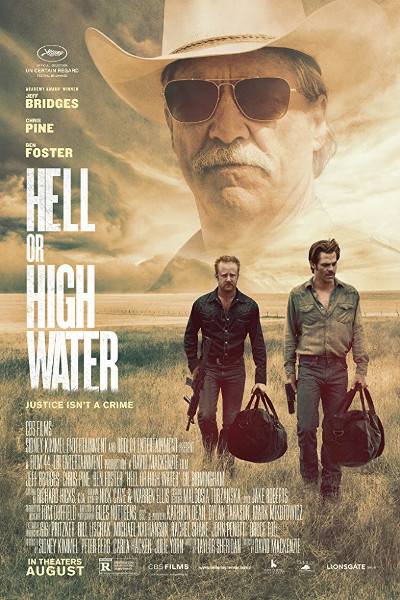

Jordi Tabit
Web Dev learner @Le Wagon
After 4 years working on city planning, I wanted to learn coding to improve my technical set of skills.
My Favorite movies
 |
ArrivalA linguist is recruited by the military to communicate with alien lifeforms after twelve mysterious spacecrafts land around the world. 2016, Denis Villeneuve |
|  |
Hell or High WaterA divorced father and his ex-con older brother resort to a desperate scheme in order to save their family's ranch in West Texas. 2016, Dadid Mackenzie |
 |
DriveA mysterious Hollywood stuntman and mechanic moonlights as a getaway driver and finds himself in trouble when he helps out his neighbor. 2011, Nicolas Winding Refn |
My projects
 |
Ciné QuizzInteractive Quizz on cinema. Find movies hidden behind the scene by revealing successive items ! May 2014 - buddies: Max Daragon & Brice Vallée |